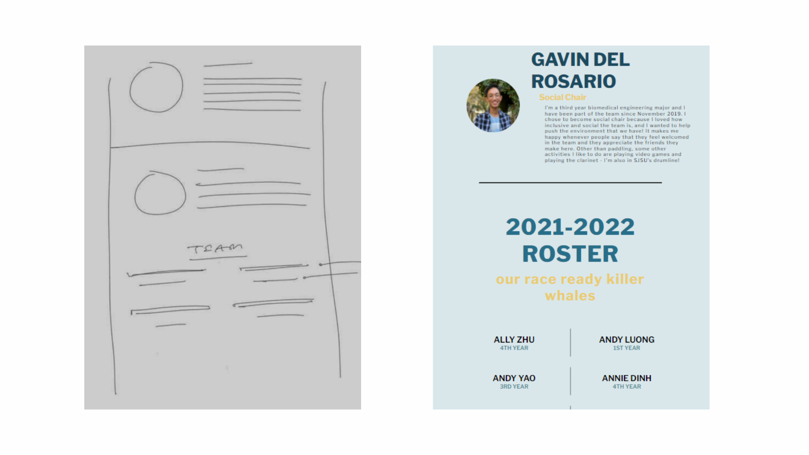

https://siddharthsubram.github.io/Gender-wage-gap/
Summary
interactive infographic of the national gender-wage disparity from 2015 to 2021. Includes different sorting algorithms and hoverable interactive elements. Data taken from the US bureau of labor statistics
Outcome
Visualization is deployable on all devices. Visualization selected amongst a class of 80 students to be used as an example for future use of iterations of the course.

- Siddharth Subramanian
- Design & Development
- Prototyping
- Research
Project Duration: 4 weeks
Background
I created the gender-wage data visualization for a data visualization class I took in 2020. As part of the assignment, I recreated David McCandles visualization of the gender-wage gap ( View it here ) and attempted to add additional functionality of it. My version of his visualization allowed for displaying data over many years, and for displaying the wage gap of a particular occupation when hovered.
View my old visualization here
The project was successful and was selected to be an example of work for future classes. However having it been made more than a year ago, I wanted to improve on this project with my current skills.
When I initially finished the visualization, my instructor suggested creating a way to display the change in wage over time. I was unable to create that feature then, but I wanted to add that functionality this time
My overall goals for this iteration were as follows
- Responsive design, the graph should take up the entire screen width regardless of screen size.
- Typography and Color scheme , the visual design should enhance the visualizations's interactivity and experience
- display the change in wage over time, in a way that does not overpower the existing visualization
Design
Goal 1: Responsive Design
By rendering the graph at at the maximum viewport width of the screen, it will be displayed at the largest width, and graph components can shrink down to scale. But shrinking the graph labels such as occupation names would greatly reduce readability, while not shrinking them at all would cause too much of the graph to be taken up by labels, reducing contrast in wage gaps.
To solve this problem, I shorthanded the names of several occupations. I then allowed the full names to be displayed when hovered, prioritizing readability.
Transportation and material moving occupations
→
Transportation and Moving
Security guards and gaming surveillance officers
→
Security guards and surveillance
Miscellaneous agricultural workers
→
agricultural workers
Visual Design
I chose a blue-green to purple analogous color scheme. I used blue and pinkish-red to easily identify the male and female entries. I used as the main accent color as it combines red and blue, showing that the graph is a combination of both genders genders.
Primary Typeface
- Sans-serif
- Sans-serif
- Sans-serif
- Sans-serif
Development
Prototpying
As a major concern was long-term scalability, we developed the website in a highly modular fashion. Allowing future SJDB members with little coding experience to be able to easily add or delete website content such as adding new officer memebers
To highlight current and past SJDB members, officers, and alunni, we built a flashcard system that interested team members could fill out to be featured on the website. These flashcards were placed in non a non obtrusive sections of the website, maintaining a clutter-free website layout

Finished Product
https://siddharthsubram.github.io/Gender-wage-gap/
Reflections
Through the creationg of the SJDB landing page, I learned that website contributions don't have to come from solely designers and developers. As an example, some members of SJDB wanted a way to voice their opinions and positive experiences with the team, which led to me creating the flashcard system
Outside of this, the sport of dragonboat has played a huge role in my early adulthood years, and being able to build a website that would help bring awareness towards dragon boat was deeply fullfilling for me